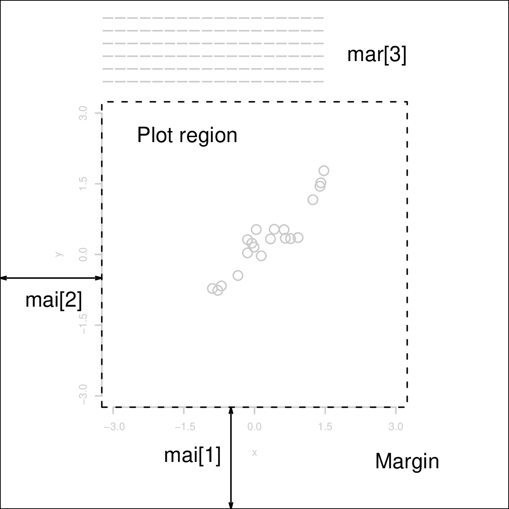
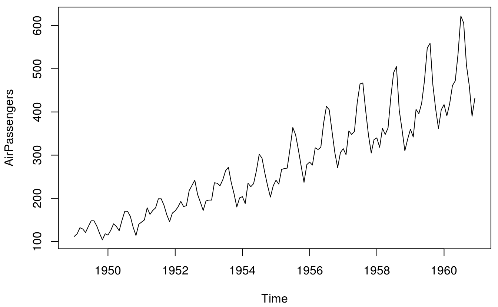
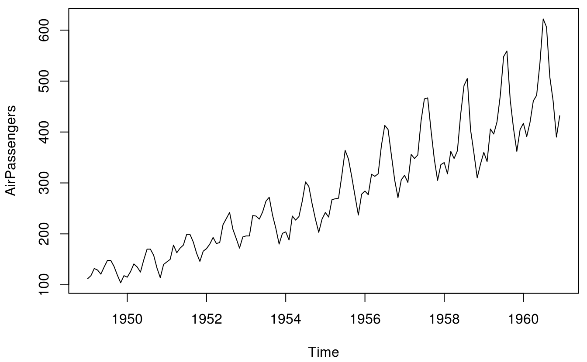
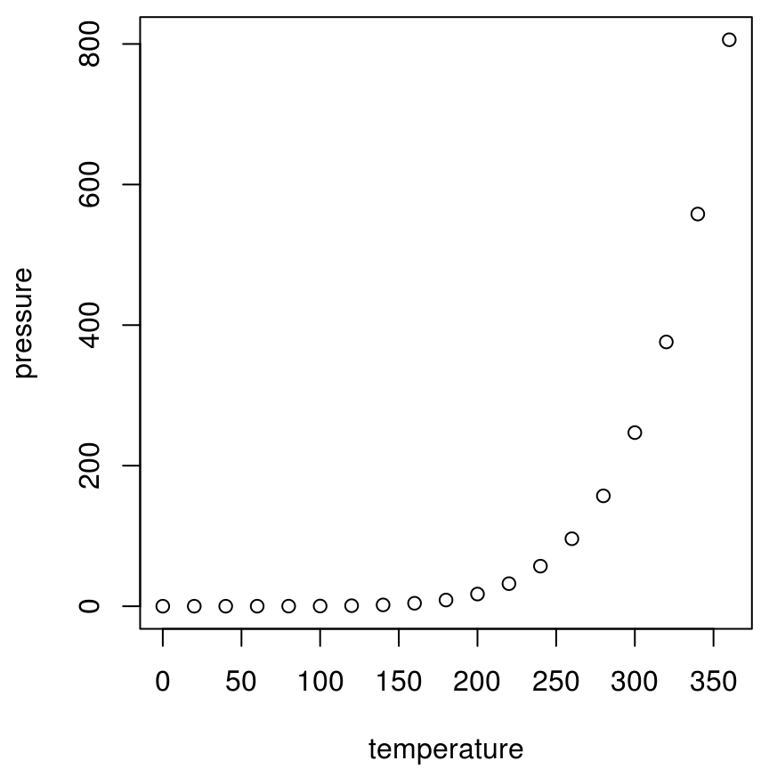
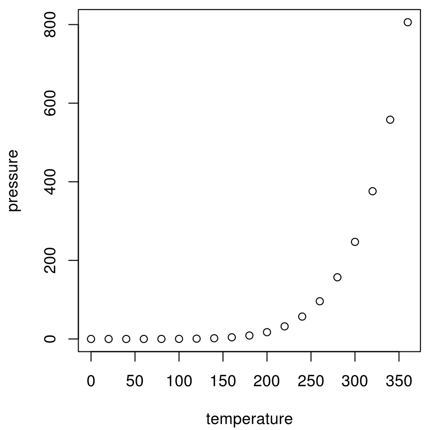
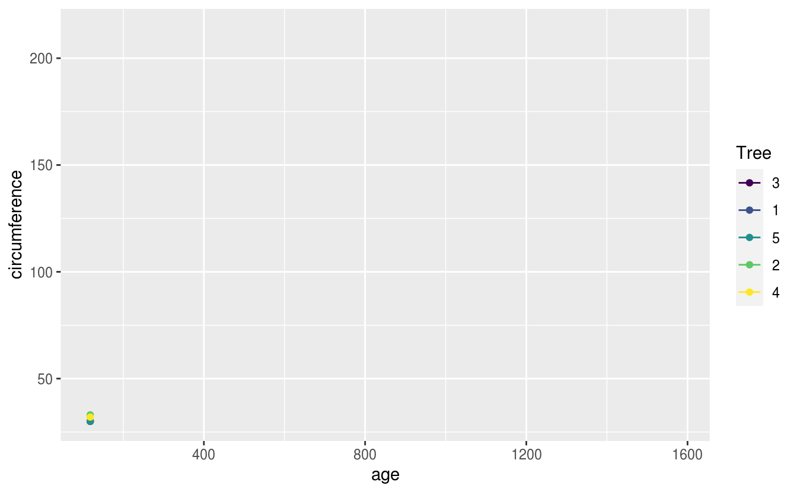

第 20 章 动态性文档
shiny
三剑客 Markdown & Pandoc’s Markdown & R Markdown Markdown for scientific writing
首先介绍 Markdown 在强调、标题、列表、断行、链接、图片、引用、代码块、LaTeX 公式等使用方式，然后在 Markdown 的基础上介绍 Pandoc’s Markdown 功能有加强的地方，R Markdown 在 Pandoc’s Markdown 的基础上介绍功能有加强的地方
20.1 Markdown
Markdown 基础语法见 RStudio IDE 自带的 Markdown 手册：RStudio 顶部菜单栏 -> Help -> Markdown Quick Reference，这里主要介绍一下Markdown 高级语法，特别是 Pandoc’s Markdown，其实是 Pandoc 提供了很多对 Markdown 的扩展支持，下面介绍一下被 Pandoc 加强后的 Markdown 表格、图片和公式的使用
20.1.1 列表
有序的列表
- 第一条
- 第二条
无序的列表
第一条
第二条
here is my first list item.
and my second.
嵌套的列表
- 有序
- Item 2
- Item 3
- Item 3a
- Item 3b
- 无序
- Item 2
- Item 2a
- Item 2b
定义型列表中包含代码
- Term 1
Definition 1
- Term 2 with inline markup
Definition 2
{ some code, part of Definition 2 }Third paragraph of definition 2.
定义类型的列表，紧凑形式
- Term 1
- Definition 1
- Term 2
- Definition 2a
- Definition 2b
无序列表
- fruits
- apples
- macintosh
- red delicious
- pears
- peaches
- apples
- vegetables
- broccoli
- chard
对应 LaTeX 列表环境里的有序环境，通篇计数
- My first example will be numbered (1).
- My second example will be numbered (2).
Explanation of examples.
- My third example will be numbered (3).
(@) 环境可以引用
- 这是一个好例子
正如 (4) 所指出的那样，
列表里包含代码块
- item one
- item two
{ my code block }显示反引号 `
20.1.2 引用
注意在引用末尾空两格，出处另起一行，引用名人名言:
It’s always better to give than to receive.
Trellis graphics are a bit like hash functions: you can be close to the target, but get a far-off result.49
— Dieter Menne
If you imagine that this pen is Trellis, then Lattice is not this pen.50
— Paul Murrell
You’re overlooking something like line 800 of the documentation for xyplot. […] It’s probably in the R-FAQ as well, since my original feeling was that this behaviour was chosen in order to confuse people and see how many people read the FAQ… :)51
— Barry Rowlingson
20.1.3 表格
插入表格很简单的，复杂的表格制作可以借助 R 包 knitr 提供的 kable 函数以及 kableExtra 包52，此外谢益辉的书籍 bookdown: Authoring Books and Technical Documents with R Markdown 中也有一节专门介绍表格 https://bookdown.org/yihui/bookdown/tables.html
kable 支持多个表格并排，
knitr::kable(
list(
head(iris[, 1:2], 3),
head(mtcars[, 1:3], 5)
),
caption = 'A Tale of Two Tables.', booktabs = TRUE
)
|
|
在表格中引入数学符号
kableExtra 、broom 和 pixiedust 包实现表格样式的精细调整，如黄湘云制作的 样例
20.1.4 图片
利用 knitr::include_graphics 函数在代码块中插入图片是很简单的，如图20.1所示，图、表的标题很长或者需要插入脚注，可以使用[文本引用][text-references]

图 20.1: (ref:footnote)
图 11.2: (ref:fig-cap)
控制图片插入的宽度参考谢益辉的博客： CSS 的位置属性以及如何居中对齐超宽元素 https://yihui.name/cn/2018/05/css-position/
One
Two
还可以在列表环境中插入图片
Three
根据代码动态生成图片，并插入文档中；外部图片插入文档中

图 20.2: 时间序列图
 

图 20.3: 2行1列布局


图 20.4: 1行2列布局

 

图 20.5: 2x2图布局
(ref:fig-cap) 测试文本引用 (ref:text-references) 图表标题很长可使用[文本引用][text-references] (ref:footnote) 表格标题里插入脚注，但是 ebooks 不支持这样插入脚注[^longnote] [^longnote]: Here’s one with multiple blocks. [text-references]: https://bookdown.org/yihui/bookdown/markdown-extensions-by-bookdown.html#text-references
20.1.5 公式
行内公式一对美元符号 \(\alpha\) 或者 \(\alpha+\beta\)，行间公式 \[\alpha\] 或者 \[\alpha + \beta\] 对公式编号，如公式 (20.1)
\[\begin{equation} L(\beta,\boldsymbol{\theta}) = f(y;\beta,\boldsymbol{\theta}) = \int_{\mathbb{R}^{n}}N(t;D\beta,\Sigma(\boldsymbol{\theta}))f(y|t)dt \tag{20.1} \end{equation}\]
\[\begin{align} \log\{\frac{p_i}{1-p_i}\} & = T_{i} = d(x_i)'\beta + S(x_i) + Z_i \tag{20.2}\\ \log(\lambda_i) & = T_{i} = d(x_i)'\beta + S(x_i) + Z_i \tag{20.3} \end{align}\]
多行公式中对某一（些）行编号，如公式 (20.4) 和 公式 (20.5)
\[\begin{align} g(X_{n}) &= g(\theta)+g'({\tilde{\theta}})(X_{n}-\theta) \\ \sqrt{n}[g(X_{n})-g(\theta)] &= g'\left({\tilde{\theta}}\right) \sqrt{n}[X_{n}-\theta ] \tag{20.4} \\ \log(\lambda_i) & = T_{i} = d(x_i)'\beta + S(x_i) + Z_i \tag{20.5} \end{align}\]
多行公式共用一个编号，如公式 (20.6)
\[\begin{equation} \begin{aligned} L(\beta,\boldsymbol{\theta}) & = \int_{\mathbb{R}^{n}} \frac{N(t;D\beta,\Sigma(\boldsymbol{\theta}))f(y|t)}{N(t;D\beta_{0},\Sigma(\boldsymbol{\theta}_{0}))f(y|t)}f(y,t)dt\\ & \varpropto \int_{\mathbb{R}^{n}} \frac{N(t;D\beta,\Sigma(\boldsymbol{\theta}))}{N(t;D\beta_{0},\Sigma(\boldsymbol{\theta}_{0}))}f(t|y)dt \\ &= E_{T|y}\left[\frac{N(t;D\beta,\Sigma(\boldsymbol{\theta}))}{N(t;D\beta_{0},\Sigma(\boldsymbol{\theta}_{0}))}\right] \end{aligned} \tag{20.6} \end{equation}\]
推荐在 equation 公式中，使用 split 环境，意思是一个公式很长，需要拆成多行，如公式(20.7)
\[\begin{equation} \begin{split} \mathrm{Var}(\hat{\beta}) & =\mathrm{Var}((X'X)^{-1}X'y)\\ & =(X'X)^{-1}X'\mathrm{Var}(y)((X'X)^{-1}X')'\\ & =(X'X)^{-1}X'\mathrm{Var}(y)X(X'X)^{-1}\\ & =(X'X)^{-1}X'\sigma^{2}IX(X'X)^{-1}\\ & =(X'X)^{-1}\sigma^{2} \end{split} \tag{20.7} \end{equation}\]
注意，\mathbf 只对字母 \(a,b,c,A,B,C\) 加粗，mathjax 不支持公式中使用 \bm 对 \(\theta,\alpha,\beta,\ldots,\gamma\) 加粗，应该使用 \boldsymbol
20.2 Pandoc’s Markdown
介绍在 Markdown 的基础上添加的功能
20.3 R Markdown
R Markdown 站在巨人的肩膀上，这些巨人有 Markdown、 Pandoc 和 LaTeX 等。
生态系统
- 报告
- learnr: Interactive Tutorials with R Markdown https://rstudio.github.com/learnr/
- r2d3: R Interface to D3 Visualizations https://rstudio.github.io/r2d3/
- radix: Radix combines the technical authoring features of Distill with R Markdown, enabling a fully reproducible workflow based on literate programming https://github.com/radixpub/radix-r
- 网络服务
- RestRserve: RestRserve is a R web API framework for building high-performance microservices and app backends https://github.com/dselivanov/RestRserve 基于 Rserve 在笔记本上处理请求的吞吐量是每秒10000次，比 plumber 快大约20倍
- plumber: Turn your R code into a web API. https://www.rplumber.io
- 展示
- revealjs: R Markdown Format for reveal.js Presentations https://github.com/rstudio/revealjs
- xaringan: Presentation Ninja 幻灯忍者写轮眼 https://slides.yihui.name/xaringan/
在指定目录创建 Book 项目，
项目根目录的文件列表
directory/
├── index.Rmd
├── 01-intro.Rmd
├── 02-literature.Rmd
├── 03-method.Rmd
├── 04-application.Rmd
├── 05-summary.Rmd
├── 06-references.Rmd
├── _bookdown.yml
├── _output.yml
├── book.bib
├── preamble.tex
├── README.md
└── style.css20.3.1 语法高亮
Pandoc 通过 LaTeX 环境 lstlisting 支持语法高亮，比如
# knit 支持的编程语言及其语法高亮环境
names(knitr::knit_engines$get())
#> [1] "awk" "bash" "coffee" "gawk" "groovy"
#> [6] "haskell" "lein" "mysql" "node" "octave"
#> [11] "perl" "psql" "Rscript" "ruby" "sas"
#> [16] "scala" "sed" "sh" "stata" "zsh"
#> [21] "highlight" "Rcpp" "tikz" "dot" "c"
#> [26] "cc" "fortran" "fortran95" "asy" "cat"
#> [31] "asis" "stan" "block" "block2" "js"
#> [36] "css" "sql" "go" "python" "julia"
#> [41] "sass" "scss" "theorem" "lemma" "corollary"
#> [46] "proposition" "conjecture" "definition" "example" "exercise"
#> [51] "proof" "remark" "solution" "nomnoml"
# knit 支持的语法高亮主题
# Pandoc 支持的语法高亮环境
c(
"ABAP", "IDL", "Plasm", "ACSL",
"inform", "POV", "Ada", "Java", "Prolog",
"Algol", "JVMIS", "Promela", "Ant", "ksh",
"Python", "Assembler", "Lisp", "R", "Awk",
"Logo", "Reduce", "bash", "make", "Rexx",
"Basic", "Mathematica", "RSL", "C", "Matlab",
"Ruby", "C++", "Mercury", "S", "Caml",
"MetaPost", "SAS", "Clean", "Miranda", "Scilab",
"Cobol", "Mizar", "sh", "Comal", "ML", "SHELXL",
"csh", "Modula-2", "Simula", "Delphi",
"MuPAD", "SQL", "Eiffel", "NASTRAN", "tcl",
"Elan", "Oberon-2", "TeX", "erlang",
"OCL", "VBScript", "Euphoria", "Octave",
"Verilog", "Fortran", "Oz", "VHDL", "GCL",
"Pascal", "VRML", "Gnuplot", "Perl", "XML",
"Haskell", "PHP", "XSLT", "HTML", "PL/I"
)
#> [1] "ABAP" "IDL" "Plasm" "ACSL" "inform"
#> [6] "POV" "Ada" "Java" "Prolog" "Algol"
#> [11] "JVMIS" "Promela" "Ant" "ksh" "Python"
#> [16] "Assembler" "Lisp" "R" "Awk" "Logo"
#> [21] "Reduce" "bash" "make" "Rexx" "Basic"
#> [26] "Mathematica" "RSL" "C" "Matlab" "Ruby"
#> [31] "C++" "Mercury" "S" "Caml" "MetaPost"
#> [36] "SAS" "Clean" "Miranda" "Scilab" "Cobol"
#> [41] "Mizar" "sh" "Comal" "ML" "SHELXL"
#> [46] "csh" "Modula-2" "Simula" "Delphi" "MuPAD"
#> [51] "SQL" "Eiffel" "NASTRAN" "tcl" "Elan"
#> [56] "Oberon-2" "TeX" "erlang" "OCL" "VBScript"
#> [61] "Euphoria" "Octave" "Verilog" "Fortran" "Oz"
#> [66] "VHDL" "GCL" "Pascal" "VRML" "Gnuplot"
#> [71] "Perl" "XML" "Haskell" "PHP" "XSLT"
#> [76] "HTML" "PL/I"20.4 表格样式
在数据分析报告中，根据报告的文本格式，我们有不同的数据呈现形式，基于 HTML 和 LaTeX 甚至 DOCX
表格样式工具 gt kableExtra flextable 和 DT
remedy 格式化 Markdown 语法 beautifyR 整理 Markdown 表格
20.4.1 HTML 样式
20.4.2 LaTeX 样式
20.5 插件
提高写作效率的 10 大 R 包或 RStudio 插件
- 简化 Markdown 写作 remedy
- 源代码截图 carbonate
- 整理 Markdown 表格 beautifyR
- 引用参考文献 citr
- 格式化 R 代码块 styler
- 准备可重复的例子，方便在论坛/Github上发问 reprex
- 快速获取 Github 等社交网络活动记录 butteRfly
- 统计 R Markdown 文档中的单词 wordcountaddin
- 写可重复性研究报告 rrtools
- RStudio 插件集合 addinslist
- 高亮支持 R 帮助文档 rdoc
markdown 简洁设计哲学， Sweave 文学编程思想，期间各种工具粉墨登场，最后分别回到 Pandoc 和 R Markdown
| Package | Title |
|---|---|
| addinsOutline | RStudio Addins for Show Outline of a R Markdown/LaTeX Project |
| blogdown | Create Blogs and Websites with R Markdown |
| bookdown | Authoring Books and Technical Documents with R Markdown |
| bsplus | Adds Functionality to the R Markdown + Shiny Bootstrap Framework |
| distill | R Markdown Format for Scientific and Technical Writing |
| flexdashboard | R Markdown Format for Flexible Dashboards |
| govdown | GOV.UK Style Templates for R Markdown |
| komaletter | Simply Beautiful PDF Letters from Markdown |
| liftr | Containerize R Markdown Documents for Continuous Reproducibility |
| memor | A rmarkdown Template that Can be Highly Customized |
| officedown | Enhanced R Markdown Format for ‘Word’ and ‘PowerPoint’ |
| pagedown | Paginate the HTML Output of R Markdown with CSS for Print |
| posterdown | Generate PDF Conference Posters Using R Markdown |
| prereg | R Markdown Templates to Preregister Scientific Studies |
| prettydoc | Creating Pretty Documents from R Markdown |
| radix | R Markdown Format for Scientific and Technical Writing |
| revealjs | R Markdown Format for reveal.js Presentations |
| rmd | Easily Install and Load the R Markdown Family |
| rmdfiltr | Lua filters for R Markdown |
| rmdformats | HTML Output Formats and Templates for rmarkdown Documents |
| rmdplugr | Plugins for R Markdown Formats |
| rmdshower | R Markdown Format for shower Presentations |
| rticles | Article Formats for R Markdown |
| siteymlgen | Automatically Generate _site.yml File for R Markdown |
| tufte | Tufte’s Styles for R Markdown Documents |
| tufterhandout | Tufte-style html document format for rmarkdown |
| uiucthemes | R Markdown Themes for UIUC Documents and Presentations |
| vitae | Curriculum Vitae for R Markdown |
| webex | Create Interactive Web Exercises in R Markdown |
| ymlthis | Write YAML for R Markdown, bookdown, blogdown, and More |
20.6 报告
数据分析报告 R Markdown
20.7 简历
pagedown
20.8 书籍
bookdown
20.9 网站
blogdown
20.10 Shiny
以 shiny 为代表
library(ggplot2)
p1 <- ggplot(data = iris, aes(x = Sepal.Length, y = Sepal.Width, color = Species)) +
geom_point() +
theme_minimal()
p2 <- ggplot(data = iris, aes(x = Petal.Length, y = Petal.Width, color = Species)) +
geom_point() +
theme_minimal()
library(patchwork)
p1 + p2
ggiraph 将 ggplot 对象转化为网页
将动态图形嵌入 Shiny App 中
图 20.6: A Shiny app created via the ggiraph package; you can see a live version at https://xiangyun.shinyapps.io/01-iris-ggiraph/.
20.11 幻灯片
xaringan
20.12 动画视频
animation 包 (Xie 2013) 将 Base R 绘制的图形转化为动画或视频
av 包 (???) 基于 FFmpeg 将静态图片合成视频，而 gifski 包 (Ooms 2018) 基于 gifski 将静态图片合成 GIF 动画，gganimate 包 (Pedersen and Robinson 2020) 支持将 ggplot2 生成的图形，借助 gifski 包转化为动态图片或视频
library(gganimate)
ggplot(data = Orange, aes(x = age, y = circumference, color = Tree)) +
geom_point() +
geom_line() +
transition_reveal(age)
制作设计文档
ggplot2 功能结构图
R 闭包、环境等的关系图
20.13 图表
20.13.1 TikZ
\usetikzlibrary{arrows}
\begin{tikzpicture}[node distance=2cm, auto,>=latex', thick, scale = 0.5]
\node (P) {$P$};
\node (B) [right of=P] {$B$};
\node (A) [below of=P] {$A$};
\node (C) [below of=B] {$C$};
\node (P1) [node distance=1.4cm, left of=P, above of=P] {$\hat{P}$};
\draw[->] (P) to node {$f$} (B);
\draw[->] (P) to node [swap] {$g$} (A);
\draw[->] (A) to node [swap] {$f$} (C);
\draw[->] (B) to node {$g$} (C);
\draw[->, bend right] (P1) to node [swap] {$\hat{g}$} (A);
\draw[->, bend left] (P1) to node {$\hat{f}$} (B);
\draw[->, dashed] (P1) to node {$k$} (P);
\end{tikzpicture}
图 20.7: Funky tikz
20.13.2 DOT
digraph test123 {
a -> b -> c;
a -> {x y};
b [shape=box];
c [label="hello\nworld",color=blue,fontsize=24,
fontname="Palatino-Italic",fontcolor=red,style=filled];
a -> z [label="hi", weight=100];
x -> z [label="multi-line\nlabel"];
edge [style=dashed,color=red];
b -> x;
{rank=same; b x}
}
图 20.8: Funky dot
20.13.4 表格
DT gt 和 kableExtra
DT 可以嵌在网页或 Shiny 应用中
kableExtra 支持 HTML 网页和 PDF 文档两种呈现方式
参考文献
Ooms, Jeroen. 2018. Gifski: Highest Quality Gif Encoder. https://CRAN.R-project.org/package=gifski.
Pedersen, Thomas Lin, and David Robinson. 2020. Gganimate: A Grammar of Animated Graphics. https://CRAN.R-project.org/package=gganimate.
Xie, Yihui. 2013. “animation: An R Package for Creating Animations and Demonstrating Statistical Methods.” Journal of Statistical Software 53 (1): 1–27. http://www.jstatsoft.org/v53/i01/.